Using Nina with Benro Polaris¶
Capturing Images | Selecting Targets | Autofocus | Plate Solving | Advanced Sequence
Capturing Images - Video Demonstration¶
You can view a demonstration of parts of this documentation in the following YouTube Video.

1. Capturing Images¶
The Benro Polaris App does a great job controlling your camera to take sequences of images for panoramas, time-lapse, and astrophotography. It exposes many camera features and makes them easy to setup and use. Unfortunately, it doesn't stretch or process images, show RAW files, or make it easy to customize file names or copy them off for stacking.
If you want to go beyond the native app, several software options provide more tailored control of your camera, especially for astrophotography. Some include:
- BackyardEOS (no mount control)
- APT - Astro Photography Tool (paid, ASCOM support)
- SGPro - Sequence Generator Pro (paid, ASCOM Support)
- Nina - Nighttime Imaging 'N' Astronomy (free, ASCOM support, Win)
- CCDciel - (free, ASCOM support, MacOS/Linux/Win)
We are focusing on using Nina, the recommended solution, due to its price (free), and excellent user interface (improved user experience).
Equipment Setup¶
Upon opening Nina, the Equipment tab allows you to discover and connect to all your various astronomy equipment. The first thing you are likely to setup, is your Camera. Nina supports Nikon and Canon cameras natively, and many other cameras through the ASCOM platform.
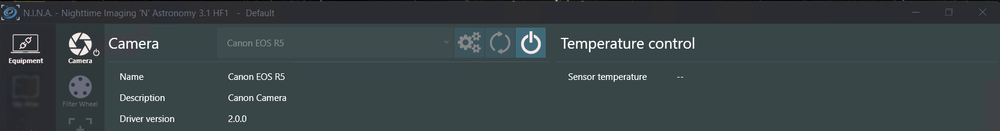
Finding Targets¶
The Sky Atlas tab allows you to search for various objects in the sky using its own database of deep sky objects. You can filter the list by object type, size, brightnness, and even how far it rises in the sky tonight. You can add a target to a sequence, set it up for framing, or slew the Benro Polaris to point at it.
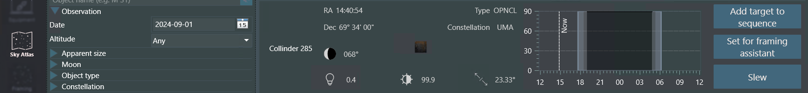
Framing Images¶
The Framing Assistant tab allows you to visualize how you frame up your target. It can download an image of the target and frames your shot given a particular focal length, pixel size, and resolution. It also allows you to plan panoramas with multiple overlapping panels that end up as separate targets in your sequence. The Alpaca Driver does not currently support rotation.
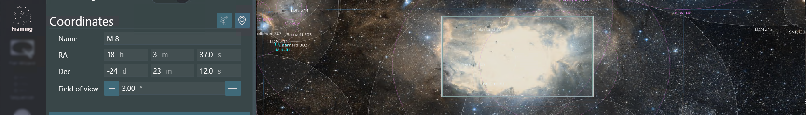
Taking Flat Images¶
The Flat Wizard tab helps you take flat images by finding the optimal exposure settings for your camera. It takes a set of exposures and attempts to calculate the best exposure using extrapolation. It then takes a sequence of flats used with your stacking software.
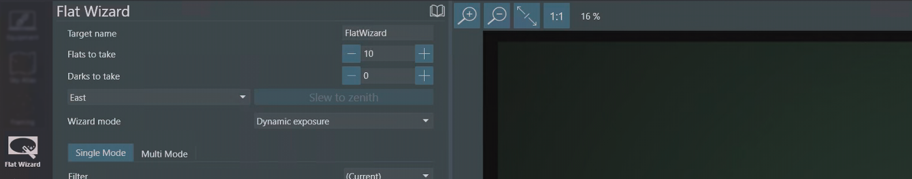
Sequencing Image Targets¶
The Sequence tab helps you plan the set of images to capture on each target. You can choose to slew the Benro Polaris and center the image using plate solving (see below). You can also refine the autofocus initially or whenever it drifts out of focus. You can define how many lights, darks, bias, and flat frames are taken at each target.
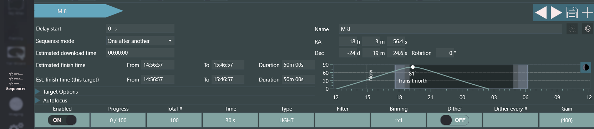
Controlling Image Capture¶
The Imaging tab is where you will spend most of your time. Across the top, a set of buttons, show or hide information and tool panels. The layout is customizable by dragging and dropping any of the tabs or frames into drop targets around the screen. You can request a live view of stretched, low-resolution captures, one after another. You can also request a high-resolution, longer exposure; that is stretched, debayered and processed. Finally, you get an overview of the current sequence target and can start or stop the sequence.
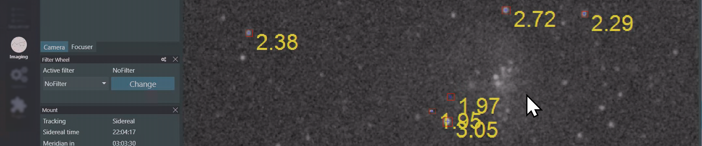
The imaging tab's main image panel allows you to zoom, rotate, or flip the image. You can also see a zoomed-in-mosiac of the image's center sides and corners. You can enable a crosshair for centering the image. You can also enable star detection annotations, helping you identify focusing and tracking issues. Finally, there is a panel where you can review the images captured so far.
Telescope Control¶
The Benro Polaris can be controlled from the Equipment/Mount tab as well as the Image tab in Nina. To enable Telescope Control from the Image tab you will need to install the Scope Control plugin.
This plugin provides the ability to MoveAxis, Control Rate, Stop/Stop Tracking, Park/UnPark, Slew to RA/Dec, Slew to Alt/Az, Abort Slew. It also adds two new views to visualise the current position of the Benro Polaris (a) top down view called Azimulth Chart and (b) Side View called Altitude Chart. These views can be enhanced to show where obstructions are located at your site with the Horizon Creator plug-in.
Customising Settings¶
The options tab includes a set of sub-tabs. On the Imaging sub-tab you to customize the directory where all the images will be saved. There is also a flexible approach to changing the naming convention of the images. You can capture additional metadata into a set of csv files using a plug-in called Session Metadata. Finally, you can copy images directly from the storage location to anywhere on your network. No more ejecting SD cards.
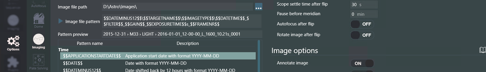
All of these image capture features are independent of the Alpaca Driver (except for slewing of course).
2. Selecting Targets¶
While Ninas Sky Atlas is good for when you dont have an internet connection, other options you may want to consider include:
- Stellarium - Has a hidden feature
F10Astro Calcs >WUTWhats up Tonight. - Telescopius - A website with Astronomy Tools and a great catalog.
- The Sky Live - A website that lists potential targets live.
Other sites and tools that I've found helpful include:
- Clear Outside - Planning the best night to shoot.
- Light Polution Map - Planning where to shoot from.
- White Screen Online - For taking FLAT images
- PhotoPills Mobile App - Planning any photography shoot.
Autofocus - Video Demonstration¶
You can view a demonstration of parts of this documentation in the following YouTube Video.

3. Star Detection and Autofocus¶
Mastering astrophotography requires ensuring that your camera lens is optimally focused. While modern cameras have fast, accurate, and intelligent focusing systems, they may not produce the best results for astrophotography. To address this, many astrophotography applications, like Nina, have their own autofocusing modules. These modules drive a telescope's focuser or your camera's lens-focusing system to capture sharp night sky images.
Setup Hocus Focus¶
While Nina has its own star detection and autofocus module, I'd recommend installing Hocus Focus, a third party star detection plug-in included in the Nina package. You can change Nina's Options > Imaging subtab, to use Hocus Focus over its own module. If you have a Canon camera, you should also install the Canon LensAF plug-in as well.
Hocus Focus has one of the best star detection algorithms around. It identifies potential stars in your image; assesses them for shape, intensity, size, location; then rejects any outliers; and then measures the remaining stars individual HFR (Half Flux Radius), the smaller the better. Its advanced rejection approach improves the reliability of the summary HFR statistic and summary # stars detected statistic.
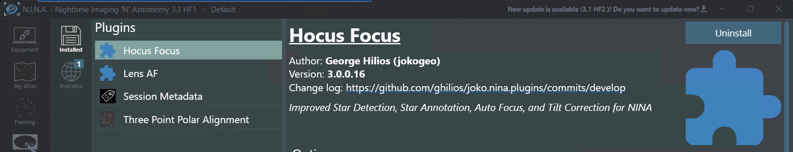
Initial Manual Focus¶
Once these plug-ins are installed, use the Equipment > Focuser sub-tab to discover and connect to your Cameras Len AF system. Use the Image > Manual Focus Targets tool panel to pick a target to focus on. Use the Image > Focuser info panel, while in live view, to get your lens roughly into focus. Take a manual Exposure.
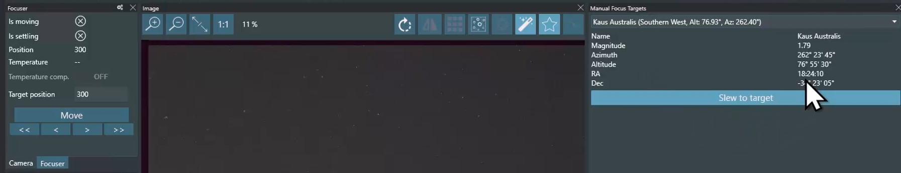
Star Detection Results¶
After you take an image, you can use the Image > Star Detection Results info panel (jigsaw piece) to see how many stars were identified, rejected and detected. The stats on the number of rejeted stars of each type provides clues into what might be wrong with our optics, mount or setup.
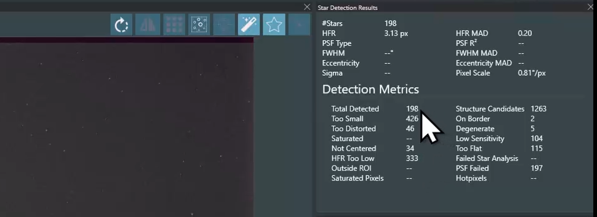
Star Detection Annotions and Options¶
You can overlay star detection annotations over the image to see how each individual star has been classified. You can fine tune the annotations on the Image > Star Annotations Option panel. Hocus Focus is very detailed and flexible. You also can use Image > Star Detection Options subtab to fine tune the Star Detection algorithm if you are not happy with what you see.
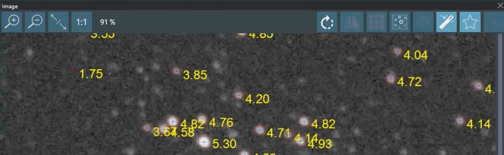
Manualy Initiated Autofocus Run¶
With stars detected and analysed, Nina can then take the HFR statistic as an indicator of how well your optics are focused. Use the Image > Autofocus tool panel to manually initate an autofocus run. Nina will move the lens out of focus, then take images, gradually moving the lens back through its focusing range. Nina plots the HFR at each of these images and fits a hyperbolic line to find the optimal focus point.
As every optics system is different, you may need to adjust how Nina drives your lens. On the Options > Autofocus sub-tab, you can fine tune Nina's autofocus run process, including how far Nina steps out of focus, how large the steps are, how long to expose for, etc. From the Image > Autofocus tool panel you can even re-run past data to see how these changes effect the focus run.
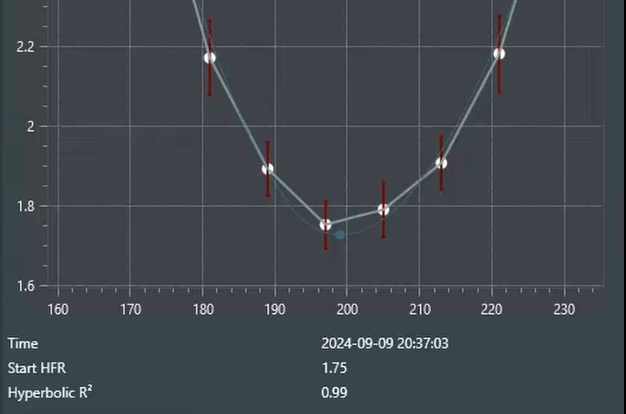
Sequenced Autofocus Run¶
In addition to manually initiated autofocus runs, you can perform them within a sequence. On the Sequence tab, you can instruct Nina to perform a run at the start, after # images, after temeratures change, or it notices a HFR shift.
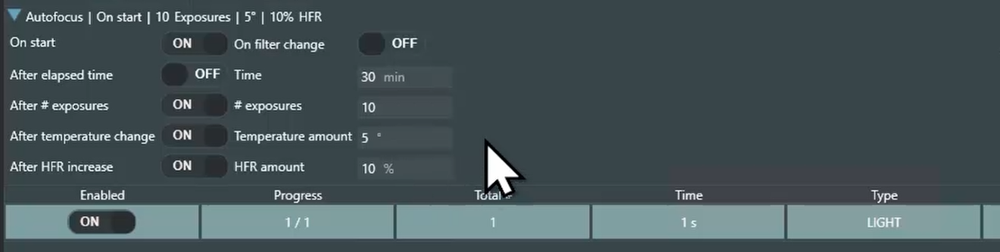
HFR and Star Detection History¶
On the Image > HFR History info panel you can also keep a eye on the HFR and # stars detected while you are monitoring a sequence. You may notice drops in star counts when images become blocked by trees or buildings; when wind picks up; when you drift out of frame frame. You may notice increases in HFR as clouds roll in, dew forms on your lens, you change you Camera's battery and its lens focus point shifts, you've left Lens AF or Image Stabilisation on. All anoying things.
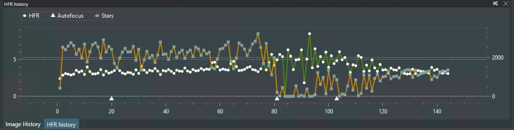
Autofocus Conclusions¶
Hocus Focus and Nina's autofocus system are not perfect. You will get frustrated with them. But it is a game changer over trying to manully do it or squeze the lens AF to spot a star, or flying blind on a sequence. It will dramatically help you improve your keeper rate, preventing the collection of a whole bunch of bad images that are later thrown away in your stacking process.
Plate Solving and Alignment - Video Demonstration¶
You can view a demonstration of parts of this documentation in the following YouTube Video.

4. Plate Solving¶
Nina supports a range of Plate-Solving applications to help identify where your mount points in the night sky. Our recommended application is ASTAP, the Astrometric STAcking Program, which includes an astrometric solver. If you have used Astronomy.net in the past, you will be amazed at ATAP's speed and ease of integration with Nina.
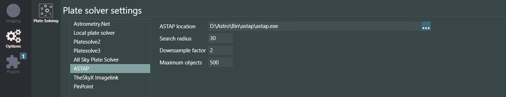
The Alpaca Driver allows you to integrate the Plate-Solving Sync feature with the alignment process of the Benro Polaris. The driver automatically aligns the Benro Polaris with the resolved coordinates whenever you perform a Sync. The more Plate-Solves you perform, the more accurate the alignment.
This can help eliminate the need to perform an initial compass alignment. It also eliminates using the BP App's joysticks to align your first star manually. Polar alignment with Benro Polaris was already relatively easy, and plate-solving makes it even easier.
Setting up ASTAP¶
ASTAP is not bundled with Nina, so you must download and install the application from the ASTAP website. You will also need to install one or more STAR Databases, which are also available on the website.
In Nina, on the Options/Plate-Solving tab, you must select ASTAP from the Plate Solver and Blind Solver drop-downs. In the Plate Solver settings panel, choose ASTAP, then set the ASTAP location to where you installed astap.exe. We recommend a short 1-second Exposure Time to facilitate plate-solving when the Benro Polaris is misaligned.
On the Options/Equipment tab, you must set the Camera Pixel Size and Telescope Focal Length to their correct values. If these do not match your equipment, the plate-solve will likely fail. We recommend also setting the Mount Coordinates Sync option to On. This will cause the Driver to align the Benro Polaris on each sync.
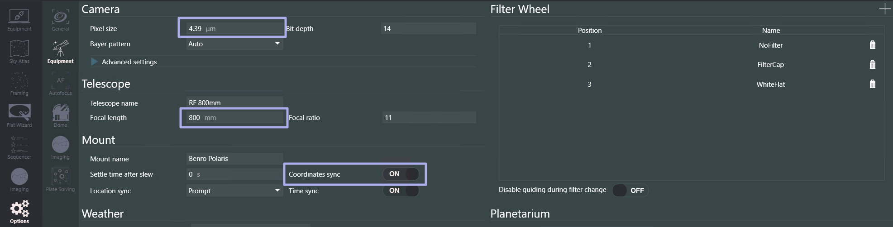
You must also ensure your lens is in focus before attempting a plate-solve. It's a good idea to perform a manually initiated autofocus run.
Manualy Initiated Plate Solving¶
Plate solving can be manually initiated from Nina's Imaging tab, Plate Solving Tool Panel. Press the Play button, and Nina will take an exposure and attempt a plate-solve with ASTAP. It will update the Center RA and Center DEC fields on the Plate Solving Tool Panel if successful. You can also choose to Sync from the Plate Solving Tool Panel. This is a quick way to initiate an alignment of the Benro Polaris to its current position.
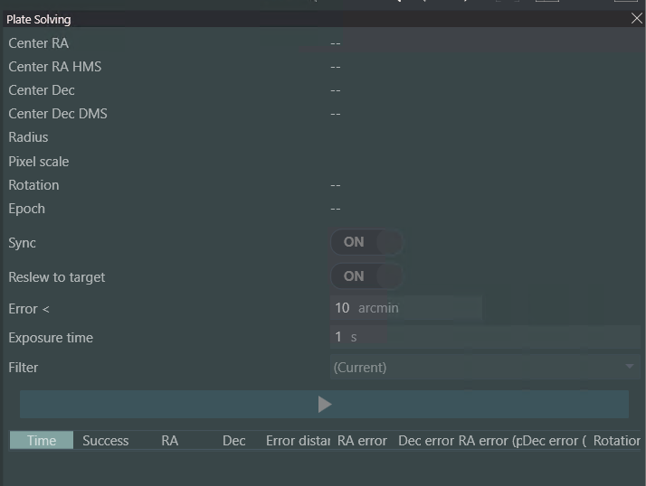
The Imaging tab's main image panel has a button to initiate a Plate Solve from a recently exposed image. This does not allow a sync.
Sequence Target Centering and Aligning¶
One of Nina's best features is automated target centering and aligning. From Nina's Sequencer tab, under Target Options, you can enable a Slew to Target and Center Target.
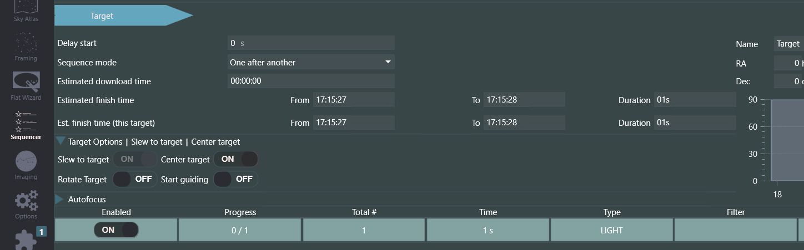
When both these settings are enabled, Nina will do the following at the start of each sequence target:
- Slew Polaris to the target coordinates.
- Take an exposure and perform a plate-solve to identify where the Polaris is pointing.
- Perform a sync to correct all applications upstream of the Driver.
- Push the sync through to align the Polaris with its actual orientation.
- Attempt to slew closer to the target, repeating the process until it is within tolerance.
Once the target is centered, Nina will continue with the sequence, conducting an optional autofocus run and then taking your set of Light images of the target. You can add additional targets to the sequence while it is running, and Nina will repeat the slewing and centering once the first target is complete.
The Benro Polaris can have a habit of drifting off target. You can address this issue by simply pausing the sequence momentarily. Whenever Nina starts a sequence again, it will perform a Slew to Target and Center Target operation.
5. Advanced Sequence¶
In addition to the Legacy Sequencer, Nina features an advanced sequencer that gives you full control of your imaging session. The Alpaca Driver integrates with the Advanced Sequence with the following instructions:
- Telescope Instructions - All Telescope instructions can control the Alpaca Driver (with the exception of Meridian Flip)
- Rotator Instructions - Instructions to rotate to a mechanical angle or plate solve to a specific position angle.
- Utility Device Action - Special Device Actions including tracking on orbital.
- Guider Instructions - Instructions sent to the guiding application can indirectly control the mount.
For information on how to use the Advanced Sequence for Panorama Workflows, please refer to the Alpaca Pilot Documentation.
Advanced Sequence Reference¶
Flow Control¶
- Sequencial Instruction Set - a group of instructions that will execute one after the other from top to bottom.
- Parallel Instruction Set - a group of instructions that will be executed in parallel. Order of instructions within the set is not defined or implied.
- Deek Sky Object Instruction Set - similar to sequencial (a group of instructions that will execute one after), where target co-ordinates and rotation are passed to any instruction that accepts them.
- Loop For Iterations - execute the set of instructions for a given number of iterations.
- Loop For Time Span - execute the set of instructions until a time span has passed.
- Loop Until Time - execute the set of instructions until a specific time has passed, including special times like sunrise, civil, nautical or astronomical dawn. If you want your imaging run to continue all night, just add a Condition to the Sequential Instruction Set, set it to Loop Until Time, and choose Astronomical Dawn.
Camera Instructions¶
- Smart Exposure - Take a given number of exposures for a given duration, type, binning, gain, offset, filter, and dither
- Take Many Exposures - Take a given number of exposures for a given duration, type, binning, gain, offset
- Take Exposure - Take an exposure for a given duration, type, binning, gain, offset. Typically used within a Loop For flow control.
Telescope Instructions¶
- Find Home - Find the home position of the mount where M1, M2, and M3 equal zero. Note that Nina does not wait until this instruction is completed. Insert a Wait For Time Span instruction if you need the Find Home to complete before the next instruction.
- Park Scope - Move the mount to the user defined Park position, and enter a Parked state.
- Unpark Scope - Return the moun to an Idle state, allowing further operations.
- Set Tracking - Used to change the tracking rate (Sidereal, Solar, Lunar, King/Custom) and tracking state (Stopped/Tracking). Use the Slew to Alt/Az followed by a Set Tracking Stopped to allow you to take foreground panarama panels.
- Slew To Alt/Az
- Slew to Ra/Dec
- Slew and Center
- Slew, center and rotate
- Solve and Sync
Telescope Triggers¶
- Center after Drift
- Meridian Flip - Not supported by the Alpaca Driver.
Rotator Instructions¶
- Rotate by Mechanical Angle
- Solve and Rotate
Guider Instructions¶
- Start Guiding - starts the autoguider
- Stop Guiding - stops the autoguider
- Restore Guiding Trigger - restores autoguiding if it was previously interrupted
Utility Instructions¶
- Wait for Time Span - Wait for a given duration in seconds
- Wait for Time - Wait until a specific time. Can also wait for sunset, civil, nautical and astronomical dusk or dawn.
- Message Box - Opens up a message box with the defined text, waiting for confirmation from the user.
- Device Action - The Alpaca Driver exposes several Device Actions for functions that are not part of the ASCOM Alpaca standard, but used by Alpaca Pilot. Nina can also make use of these extensions via the Device Action instruction.
-
Polaris:PanoGrid
Set up a panorama or mosaic grid, the same settings as the PanoGrid page in Alpaca Pilot. Any of these settings can be given, the rest keep their current values:cols,rows(the grid size),hstep,vstep(degrees between panel centres),first(corner of panel 1: 0 Top Left, 1 Top Right, 2 Bottom Left, 3 Bottom Right),order(0 Row-Major, 1 Column-Major, 2 Serpentine),track(0 Landscape - Untracked, 1 Sky - Horizon-Locked, 2 Sky - Celestial, 3 Sky - Milky Way),anchor(what sits at the reference position: 0 the whole mosaic's centre, n panel n),ref(reference frame: 0 Az/Alt/Roll, 1 RA/Dec/PA, 2 Galactic, 3 Motor Position) andr1,r2,r3(the reference position in that frame, RA in hours). Use Polaris:ConfigSave to keep them for the next session. | Instruction | Device | Action | Parameters | | --- | --- | --- | --- | | Utility > Device Action |Telescope|Polaris:PanoGrid|{"cols": 5, "rows": 3, "hstep": 2.0, "vstep": 1.4, "first": 0, "order": 2, "track": 2}| | Utility > Device Action |Telescope|Polaris:PanoGrid|{"anchor": 0, "ref": 1, "r1": 5.59, "r2": -5.39, "r3": 0}| -
Polaris:PanoSlew
Slew to a panel of the grid set by Polaris:PanoGrid, rolling and tracking as itstracksetting says.panelis the panel number (1 to cols x rows); leave it out to go to the next panel (after the last it wraps round to panel 1), or use -1 to return to the current one. It waits for the slew to finish unless"isasync": trueis given. In an advanced sequence a loop of Polaris:PanoSlew{}followed by your exposures captures the whole grid. | Instruction | Device | Action | Parameters | | --- | --- | --- | --- | | Utility > Device Action |Telescope|Polaris:PanoSlew|{"panel": 1}| | Utility > Device Action |Telescope|Polaris:PanoSlew|{}| -
Polaris:SlewAbsolute
Slew to a position given in any one co-ordinate system, including Roll and Position Angle, which the standard ASCOM slews can't set:az,alt,roll(topocentric),ra(hours),dec,pa(equatorial),l,b,gpa(galactic), orm1,m2,m3(motor angles). Values are decimal degrees, or strings such as"-05:23:28". Axes left out keep their current value. Motor angles are the M1/M2/M3 shown in Alpaca Pilot's Motor Speed & Position panel; the motors are driven straight to them, so M1 and M3 always end the same way round, and the cables in the same state. They must be within the motor limits and can't be mixed with the other keys. It waits for the slew to finish unless"isasync": trueis given. Needs Advanced Goto enabled. | Instruction | Device | Action | Parameters | | --- | --- | --- | --- | | Utility > Device Action |Telescope|Polaris:SlewAbsolute|{"az": 180, "alt": 81, "roll": 0}| | Utility > Device Action |Telescope|Polaris:SlewAbsolute|{"pa": 90}| | Utility > Device Action |Telescope|Polaris:SlewAbsolute|{"m1": 0, "m2": -30, "m3": 0}| -
Polaris:SlewRelative
As Polaris:SlewAbsolute, but each value is added to the current position: for example to step the framing, or turn the camera. Motor angles add to the current motor angles. | Instruction | Device | Action | Parameters | | --- | --- | --- | --- | | Utility > Device Action |Telescope|Polaris:SlewRelative|{"ra": 0.1, "dec": -1.5}| | Utility > Device Action |Telescope|Polaris:SlewRelative|{"roll": 90}| -
Polaris:AbortSlew
Stop any goto, slew or axis movement and stop tracking, the same as the Stop button in Alpaca Pilot. | Instruction | Device | Action | Parameters | | --- | --- | --- | --- | | Utility > Device Action |Telescope|Polaris:AbortSlew|{}| -
Polaris:MoveAxis
Move continuously along one axis atratedegrees per second (negative for the other direction) until it is called again with"rate": 0.axisis 0 Azimuth, 1 Altitude, 2 Roll, 3 RA, 4 Dec, 5 Position Angle, 6 Galactic longitude, 7 Galactic latitude, 8 Galactic PA. The mount combines the motors to move along that axis only, as the Alpaca Pilot joysticks do. Needs Advanced Slewing enabled. | Instruction | Device | Action | Parameters | | --- | --- | --- | --- | | Utility > Device Action |Telescope|Polaris:MoveAxis|{"axis": 2, "rate": 3}| | Utility > Device Action |Telescope|Polaris:MoveAxis|{"axis": 2, "rate": 0}| -
Polaris:MoveMotor
Run one motor directly atratedegrees per second (between -9 and +9), with no co-ordination or pointing control, until it is called again with"rate": 0.axisis 0 M1, 1 M2, 2 M3. Meant for testing and for unwinding cables: the motor keeps running until stopped, or until it reaches its motor limit, where the driver stops all motors. | Instruction | Device | Action | Parameters | | --- | --- | --- | --- | | Utility > Device Action |Telescope|Polaris:MoveMotor|{"axis": 0, "rate": -5}| | Utility > Device Action |Telescope|Polaris:MoveMotor|{"axis": 0, "rate": 0}| -
Polaris:ResetAxes
Command the Polaris to reset all three axes, which drives each motor to its zero. This replicates the double-tap gesture on each joystick in the Benro Polaris App. After the Polaris is switched on, the first reset also re-takes each motor's zero from its position sensor, which only knows the angle within one turn. If the head was more than half a turn from its home position when the Polaris was switched on (for example cables wound by a long satellite pass), unwind it by hand first: otherwise the reset can turn it a further turn the same way and the zero ends a whole turn out. | Instruction | Device | Action | Parameters | | --- | --- | --- | --- | | Utility > Device Action |Telescope|Polaris:ResetAxes|{}| -
Polaris:ReplayMark
Write a marker line (REPLAYLOG) with the given parameters into the Alpaca Driver's log, whatever the log settings. Useful to mark where something happened in a sequence (a new target, a filter change, the start of a test) so it can be found later in the log, on the same timeline as the driver's own records. | Instruction | Device | Action | Parameters | | --- | --- | --- | --- | | Utility > Device Action |Telescope|Polaris:ReplayMark|{"note": "NGC 104 start"}| -
Polaris:TrackOrbital
Fetch the orbital parameters of an object, slew to its co-ordinates and start non-sidereal tracking. This Device Action can be used to slew to the Moon, Sun, Satellites, Comets etc. The Parameters field should be in JSON format defining "name" and "category" of the object, where category 3: 'Star', 4: 'Planet', 5: 'Moon', 6: 'Satellite', 7: 'Commet', 8: 'Asteroid', 9: 'Landmark', 10: 'Custom'. For example to track a Solar Eclipse, Lunar Eclipse or the International Space Station use the following settings. | Instruction | Device | Action | Parameters | | --- | --- | --- | --- | | Utility > Device Action |Telescope|Polaris:TrackOrbital|{"name": "Sun", "category":3}| | Utility > Device Action |Telescope|Polaris:TrackOrbital|{"name": "Moon", "category":5}| | Utility > Device Action |Telescope|Polaris:TrackOrbital|{"name": "25544", "category":6}| -
Polaris:ConfigUpdate
Update the Alpaca Driver configuration setting to the defined values. Any property defined in config.toml can be modified with this action. The Parameters field should be in JSON format defining a list of properties and values to change. Separate multiple property:values with a comma. For example to (a) enable multi-point alignment (b) reduce the goto tollerance to 15 arc-min, © to alter the park position and (d) to alter the ASCOM focal length; use the following. | Instruction | Device | Action | Parameters | | --- | --- | --- | --- | | Utility > Device Action |Telescope|Polaris:ConfigUpdate|{"advanced_alignment": true}| | Utility > Device Action |Telescope|Polaris:ConfigUpdate|{"pid_Kc": 15}| | Utility > Device Action |Telescope|Polaris:ConfigUpdate|{"m3_park": 90, "m2_park":-45}| | Utility > Device Action |Telescope|Polaris:ConfigUpdate|{"focal_length": 100}|Note that the Polaris:ConfigUpdate action returns a value indicating what has been changed. Nina doesnt understand this reponse and marks the instruction execution return as an error. You can safely ignore this in the advanced sequence and mark the instruction as On Error
Continue -
Polaris:ConfigSave
Save any modified Alpaca Driver settings to the fileconfig.pilot.jsonin the data directory. | Instruction | Device | Action | Parameters | | --- | --- | --- | --- | | Utility > Device Action |Telescope|Polaris:ConfigSave|{}| - Polaris:ConfigRestore
Restore all Alpaca Driver settings back to the defaults fromconfig.toml. | Instruction | Device | Action | Parameters | | --- | --- | --- | --- | | Utility > Device Action |Telescope|Polaris:ConfigRestore|{}|